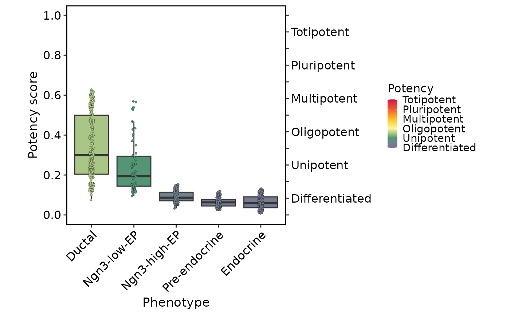

Plot CytoTRACE 2 Results
Usage
CytoTRACEPlot(
srt,
reduction = NULL,
group.by = NULL,
combine = TRUE,
nrow = NULL,
ncol = NULL,
byrow = TRUE,
pt.size = NULL,
pt.alpha = 1,
palette = "Paired",
palcolor = NULL,
theme_use = "theme_scop",
theme_args = list(),
verbose = TRUE,
...
)Arguments
- srt
A Seurat object.
- reduction
Which dimensionality reduction to use. If not specified, will use the reduction returned by DefaultReduction.
- group.by
Name of one or more meta.data columns to group (color) cells by.
- combine
Combine plots into a single
patchworkobject. IfFALSE, return a list of ggplot objects.- nrow
Number of rows in the combined plot. Default is
NULL, which means determined automatically based on the number of plots.- ncol
Number of columns in the combined plot. Default is
NULL, which means determined automatically based on the number of plots.- byrow
Whether to arrange the plots by row in the combined plot. Default is
TRUE.- pt.size
The size of the points in the plot.
- pt.alpha
The transparency of the data points. Default is
1.- palette
Color palette name. Available palettes can be found in thisplot::show_palettes. Default is
"Paired".- palcolor
Custom colors used to create a color palette. Default is
NULL.- theme_use
Theme used. Can be a character string or a theme function. Default is
"theme_scop".- theme_args
Other arguments passed to the
theme_use. Default islist().- verbose
Whether to print the message. Default is
TRUE.- ...
Additional arguments to be passed to CellDimPlot and FeatureDimPlot.
Value
If combine = TRUE, returns a patchwork object combining all plots.
If combine = FALSE, returns a named list of ggplot objects:
Score: UMAP plot colored by score computed by CytoTRACE2;Potency: UMAP plot colored by potency category computed by CytoTRACE2;Relative: UMAP plot colored by relative score computed by CytoTRACE2;Phenotype: UMAP plot colored by phenotype (ifgroup.byis provided);Boxplot: Boxplot of score computed by CytoTRACE2 corresponding to phenotype (ifgroup.byis provided).
Examples
if (thisplot::check_ci_env()) {
data(pancreas_sub)
pancreas_sub <- standard_scop(pancreas_sub)
pancreas_sub <- RunCytoTRACE(
pancreas_sub,
species = "Mus_musculus"
)
CytoTRACEPlot(
pancreas_sub,
group.by = "CellType"
)
plots <- CytoTRACEPlot(
pancreas_sub,
group.by = "CellType",
combine = FALSE
)
plots$Boxplot
}
#>
#> → Will install 6 packages.
#> → All 6 packages (0 B) are cached.
#> + CytoTRACE2 1.1.0 [bld][cmp] (GitHub: 1710d43)
#> + HiClimR 2.2.1 + ✔ libnetcdf-dev
#> + RcppParallel 5.1.11-1 + ✔ make
#> + Rfast 2.1.5.2
#> + ncdf4 1.24 + ✔ libnetcdf-dev
#> + zigg 0.0.2
#> ✔ All system requirements are already installed.
#>
#> ℹ No downloads are needed, 6 pkgs are cached
#> ✔ Got ncdf4 1.24 (x86_64-pc-linux-gnu-ubuntu-24.04) (281.21 kB)
#> ✔ Got zigg 0.0.2 (x86_64-pc-linux-gnu-ubuntu-24.04) (25.57 kB)
#> ✔ Got RcppParallel 5.1.11-1 (x86_64-pc-linux-gnu-ubuntu-24.04) (1.96 MB)
#> ✔ Got HiClimR 2.2.1 (x86_64-pc-linux-gnu-ubuntu-24.04) (575.27 kB)
#> ✔ Got Rfast 2.1.5.2 (x86_64-pc-linux-gnu-ubuntu-24.04) (2.99 MB)
#> ✔ Got CytoTRACE2 1.1.0 (source) (182.95 MB)
#> ℹ Installing system requirements
#> ℹ Executing `sudo sh -c apt-get -y update`
#> Get:1 file:/etc/apt/apt-mirrors.txt Mirrorlist [144 B]
#> Hit:2 http://azure.archive.ubuntu.com/ubuntu noble InRelease
#> Hit:6 https://packages.microsoft.com/repos/azure-cli noble InRelease
#> Hit:7 https://packages.microsoft.com/ubuntu/24.04/prod noble InRelease
#> Hit:3 http://azure.archive.ubuntu.com/ubuntu noble-updates InRelease
#> Hit:4 http://azure.archive.ubuntu.com/ubuntu noble-backports InRelease
#> Hit:5 http://azure.archive.ubuntu.com/ubuntu noble-security InRelease
#> Reading package lists...
#> ℹ Executing `sudo sh -c apt-get -y install libnetcdf-dev make libcurl4-openssl-dev libssl-dev zlib1g-dev libglpk-dev libxml2-dev pandoc libpng-dev python3 libicu-dev`
#> Reading package lists...
#> Building dependency tree...
#> Reading state information...
#> libnetcdf-dev is already the newest version (1:4.9.2-5ubuntu4).
#> libnetcdf-dev set to manually installed.
#> make is already the newest version (4.3-4.1build2).
#> libcurl4-openssl-dev is already the newest version (8.5.0-2ubuntu10.6).
#> libssl-dev is already the newest version (3.0.13-0ubuntu3.6).
#> zlib1g-dev is already the newest version (1:1.3.dfsg-3.1ubuntu2.1).
#> libglpk-dev is already the newest version (5.0-1build2).
#> libxml2-dev is already the newest version (2.9.14+dfsg-1.3ubuntu3.6).
#> pandoc is already the newest version (3.1.3+ds-2).
#> libpng-dev is already the newest version (1.6.43-5ubuntu0.3).
#> python3 is already the newest version (3.12.3-0ubuntu2.1).
#> libicu-dev is already the newest version (74.2-1ubuntu3.1).
#> 0 upgraded, 0 newly installed, 0 to remove and 96 not upgraded.
#> ✔ Installed HiClimR 2.2.1 (72ms)
#> ✔ Installed ncdf4 1.24 (93ms)
#> ✔ Installed RcppParallel 5.1.11-1 (134ms)
#> ✔ Installed Rfast 2.1.5.2 (150ms)
#> ✔ Installed zigg 0.0.2 (111ms)
#> ℹ Packaging CytoTRACE2 1.1.0
#> ✔ Packaged CytoTRACE2 1.1.0 (4.8s)
#> ℹ Building CytoTRACE2 1.1.0
#> ✔ Built CytoTRACE2 1.1.0 (9.6s)
#> ✔ Installed CytoTRACE2 1.1.0 (github::digitalcytometry/cytotrace2@1710d43) (1.1s)
#> ✔ 1 pkg + 143 deps: kept 137, added 6, dld 6 (NA B) [2m 21s]
#> Warning: replacing previous import ‘data.table::first’ by ‘dplyr::first’ when loading ‘CytoTRACE2’
#> Warning: replacing previous import ‘data.table::last’ by ‘dplyr::last’ when loading ‘CytoTRACE2’
#> Warning: replacing previous import ‘data.table::between’ by ‘dplyr::between’ when loading ‘CytoTRACE2’
#> cytotrace2: Started loading data
#> Dataset contains 15998 genes and 1000 cells.
#> The number of cells in your dataset is less than 1000. Fast mode has been disabled.
#> The passed subsample size is greater than the number of cells in dataset.
#> Now setting subsample size to 1000
#> cytotrace2: Running on 1 subsample(s) approximately of length 1000
#> cytotrace2: Started running on subsample(s). This will take a few minutes.
#> cytotrace2: Started preprocessing.
#> 12486 input genes mapped to model genes.
#> cytotrace2: Started prediction.
#> This section will run using 1 / 4 core(s).
#> cytotrace2: Started postprocessing.
#> cytotrace2: Running with slow mode (subsamples are processed sequentially)
#> Number of cores for KNN: 1
#> cytotrace2: Finished
